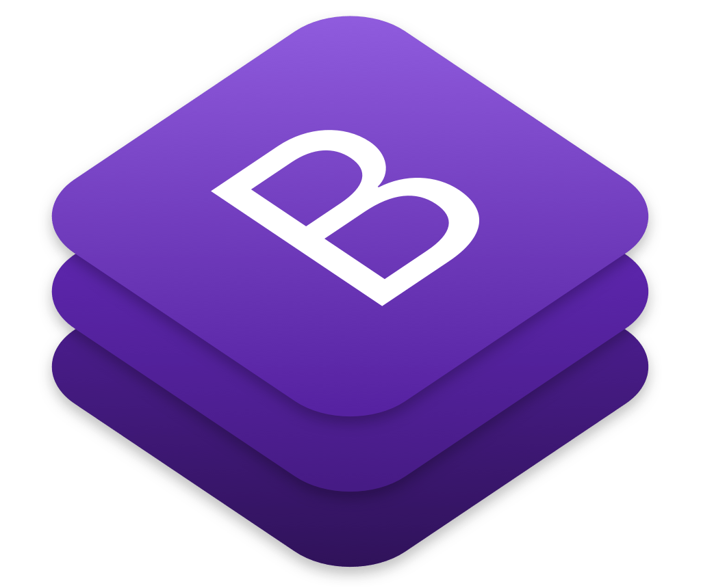

Le service de validation de balisage est un validateur du Web qui permet aux utilisateurs Internet de vérifier les documents HTML.La validation du balisage est une étape importante pour garantir la qualité technique des pages Web.

Bootstrap
Bootstrap est une collection d'outils utiles à la création du design (graphisme, animation et interactions avec la page dans le navigateur, etc.) de sites et d'applications web. C'est un ensemble qui contient des codes HTML et CSS, des formulaires, boutons, outils de navigation et autres éléments interactifs.
Stack Overflow
Stack Overflow est un site web proposant des questions et réponses sur un large choix de thèmes concernant la programmation informatique. Il fait partie du réseau de sites Stack Exchange.
Developpez.net
Le forum Developpez.com est une communauté francophone dédiée au développement informatique, lancée en 19993. Developpez.com se décompose en deux sites distincts : developpez.com et developpez.net.